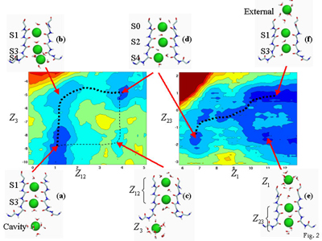

More than a Static Image
Just four years ago, the world got its first view of what a potassium channel looks like. An X-ray crystallographic image taken in 1998 by Rod MacKinnon and collaborators at Rockefeller University revealed the channel's three-dimensional form. Its mouth was perfectly sized to admit a potassium ion stripped of its surrounding cloud of water molecules but would not let in a dehydrated sodium ion.
The channel was long enough to hold several ions at once, suggesting how it could transport ions so quickly. And the channel's negatively charged interior, which resembled the environment of water, suggested it could entice a potassium ion to shed its water molecules and slip inside as easily as if it remained in solution. That, however, was where the insights ended.
"The X-ray images gave us the essential elements that are needed to understand the channel's operation. But these are static, so one cannot see the forces that come into play when the ions and the water molecules are moving," Roux says.
To understand how the channel ushers potassium ions along, and why the ions don't repel one another more strongly, scientists needed to create and animate a virtual version of the entire system using molecular dynamics. This was done using supercomputers, including the SGI Origin2000 at NCSA at the University of Illinois at Urbana-Champaign.
Berneche and Roux used a program known as CHARMM (Chemistry at Harvard Molecular Mechanics), which is designed specifically to run molecular dynamics simulations, to build a potassium channel, cell membrane molecules,
water molecules and potassium ions. "Our calculations are a way to exploit the fantastic information obtained recently from the X-ray images so that we can really connect them to the most fundamental physical laws," Roux says. All in all, the program tracked the activities of about 40,000 atoms--a hefty computational burden.
But even with today's most powerful supercomputers, it would be impossible to track the movements of every atom in the system while simulating a single potassium ion arriving at, entering, and completely traversing the channel. So Berneche and Roux adopted a more practical strategy and mapped the energetic topography of the journey instead. The technique can be likened to measuring the hills and valleys a rolling ball might encounter. The places within the channel where repulsive atomic forces encourage ions to roll away would be the hills. Sites within the channel where energy barriers are low tend to slow the travel of ions like valleys. With this topography mapped out, they were able to calculate the average energetic environment a traveling potassium ion would be likely to see.
Channel Cartography
What the calculations revealed was astonishing. The model indicated a progression where potassium ions slide in and out of the binding sites in unison. Just as one ion leaves the channel, another slides into place outside the mouth, and the ions already in the channel roll one valley, or binding site, closer to the exit. Furthermore, Roux says, "Many biophysicists had been relatively uncomfortable having so many ions in a small pore; the energy repelling one another was thought to be enormous ... The simulation showed us, yes, the ions can move in this pore, and the repulsion in the pore is actually much more modest than people had expected."
In addition to five interior valleys or sites where the simulation found that ions were most likely to be located, Roux's calculations predicted two as-yet-undetected sites at the mouth of the channel, just outside the cell membrane. The energetic slope at each of these valleys was very gentle and allowed ions to keep moving rather than linger.
Just as Berneche and Roux completed their analyses, MacKinnon and colleagues made available a second X-ray crystallographic image showing the potassium channel at much higher resolution. The snapshot revealed several potassium ions in the act of passing through the channel, data that closely agreed with the positions predicted by Roux and Berneche. The crystallography work and the prediction were published in the same issue Nature in 2001.

Maps of the energy barriers faced by an ion in different parts of the channel.
Areas with high energy barriers are colored red, while those with low energy
barriers are colored blue. An ion following the lowest energy pathway
(traced by the heavy dotted lines would assume configurations a-b-d-f.
Alternatively, ions may follow a secondary low-energy pathway
(traced by the thin dashed lines) that follows the configurations a-c-d-f.
In an accompanying review, biochemist Christopher Miller of Brandeis University writes of Roux and Berneche's achievement, "This successful prediction in advance of the facts--a rarity in computational biochemistry--enhances the confidence of skeptical experimentalists in methods and parameters used in this theoretical work."
Now that the basis of ion conduction is clearer, the next challenge will be to understand how the potassium channel opens and closes its doors to allow an ion to pass. The potassium channel itself looks like an upside-down teepee made up of four identical molecular subunits. Each subunit makes up part of the door that closes the channel entrance. Recent X-ray crystallographic images, which have caught the door in its open position, show that each subunit must move in order to open the channel. "How does this happen? Do they open one by one? Or at the same time? That will definitely be an interesting thing to look at," Roux says. Once he finds out, with help from NCSA's computing resources, rush hour will never feel as bewildering again.
{kind=link}
{kind=link}
{kind=link}